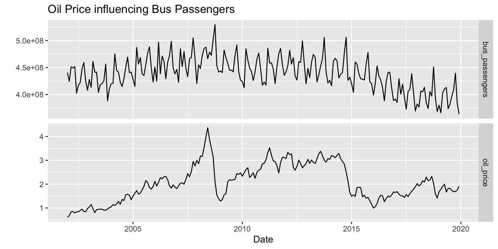
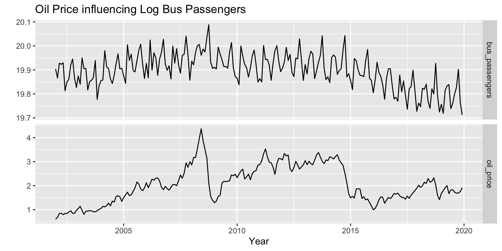
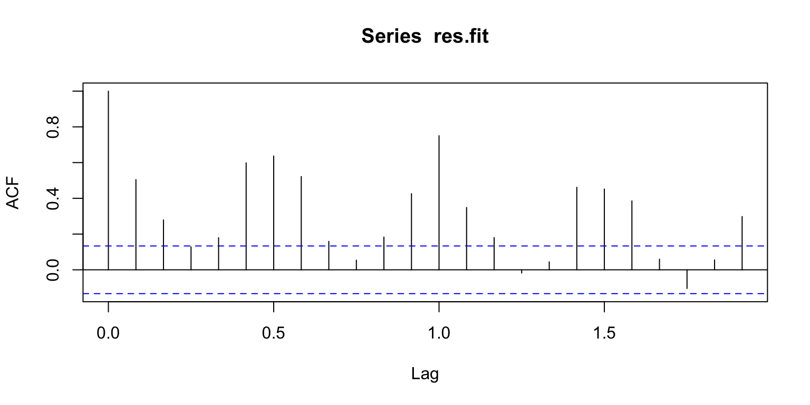
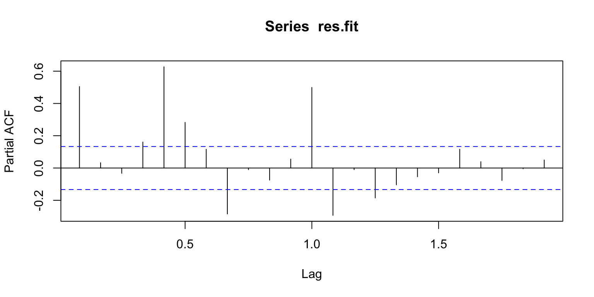
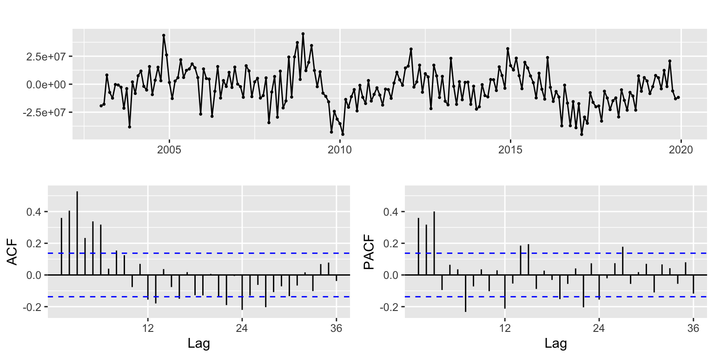
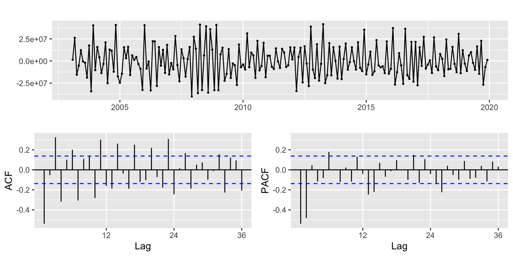
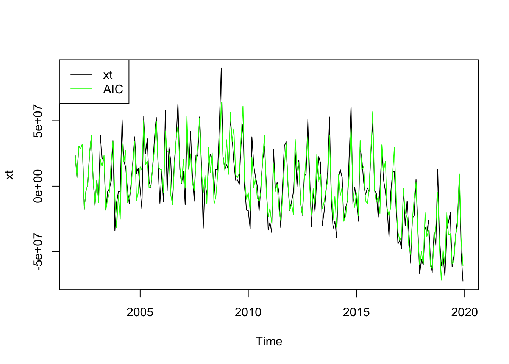
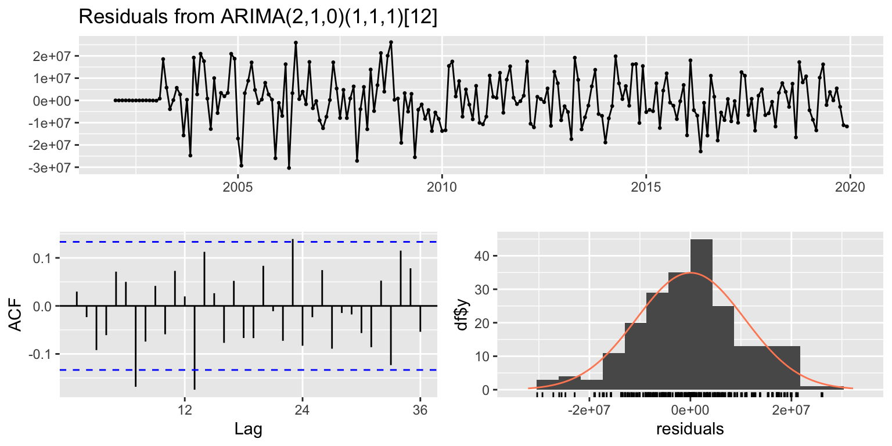
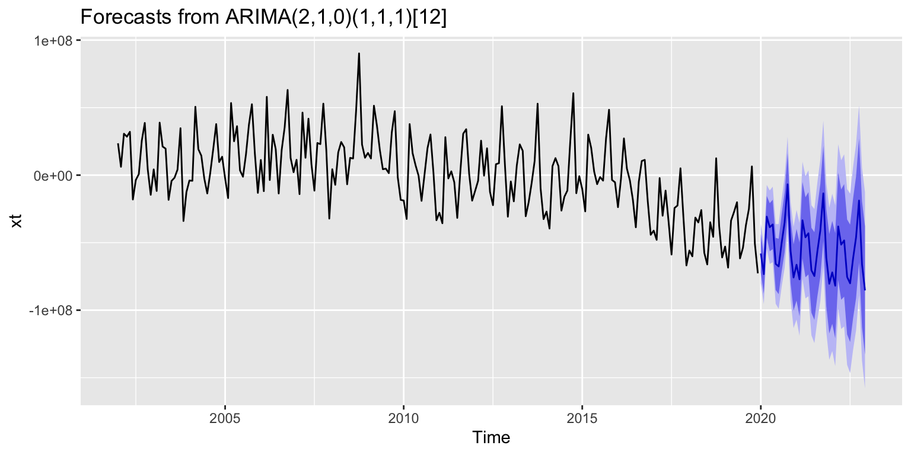

SARIMAX - Bus Passengers and Oil Price
Introduction…
As we saw in the previous section 5_7_bus_passengers.html we can see that the data is seasonal.
Dataset
# Import dataset
df_bus_passengers_PC <- read_csv('../data/df_bus_passengers_PC.csv')
# Import dataset
df_oil_price_monthly_PC <- read_csv('../data/df_oil_price_monthly_PC.csv')
# Create Date
df_oil_price_monthly_PC <- df_oil_price_monthly_PC %>%
mutate(date2 = make_date(year(date), month(date), 01))
if(min(df_bus_passengers_PC$DATE) >= min(df_oil_price_monthly_PC$date))
{
min_date <- min(df_bus_passengers_PC$DATE)
}else
{
min_date <-min(df_oil_price_monthly_PC$date)
}
df_oil_price_monthly_PC <- df_oil_price_monthly_PC %>% select('date2', 'adjusted')
names(df_bus_passengers_PC) <- c('DATE', 'bus_passengers')
names(df_oil_price_monthly_PC) <- c('DATE', 'oil_price')
df_bus_passengers_PC <- df_bus_passengers_PC %>% filter(DATE >= min_date)
df_oil_price_monthly_PC <- df_oil_price_monthly_PC %>% filter(DATE >= min_date)
dd <- merge(df_bus_passengers_PC, df_oil_price_monthly_PC, by.x = "DATE", by.y = "DATE", all = TRUE)
dd <- dd %>% arrange(DATE)
dd.ts<-ts(dd,star=decimal_date(min_date),frequency = 12)
knitr::kable(head(dd))| DATE | bus_passengers | oil_price |
|---|---|---|
| 2002-01-01 | 440684795 | 0.6078003 |
| 2002-02-01 | 424375541 | 0.6817473 |
| 2002-03-01 | 451262016 | 0.8421044 |
| 2002-04-01 | 449206147 | 0.8514821 |
| 2002-05-01 | 451919744 | 0.7909517 |
| 2002-06-01 | 402466426 | 0.8366095 |
Plot
autoplot(dd.ts[,c(2:3)], facets=TRUE) +
xlab("Date") + ylab("") +
ggtitle("Oil Price influencing Bus Passengers")
Plot
lg.dd <- dd #making a copy
lg.dd$bus_passengers<-log(dd$bus_passengers)
lg.dd.ts<-ts(lg.dd,star=decimal_date(min_date),frequency = 12)
autoplot(lg.dd.ts[,c(2:3)], facets=TRUE) +
xlab("Year") + ylab("") +
ggtitle("Oil Price influencing Log Bus Passengers")
Linear Model
# Create ts for Bus Passengers
dd$bus_passengers <- ts(dd$bus_passengers, star=decimal_date(min_date),frequency = 12)
# Create ts for Oil Price
dd$oil_price <- ts(dd$oil_price, star=decimal_date(min_date),frequency = 12)
# Fit the linear model
fit.reg <- lm(bus_passengers ~ oil_price, data=dd)
summary(fit.reg)
Call:
lm(formula = bus_passengers ~ oil_price, data = dd)
Residuals:
Min 1Q Median 3Q Max
-72708753 -18798685 801515 19261215 90164309
Coefficients:
Estimate Std. Error t value Pr(>|t|)
(Intercept) 408022142 5624539 72.543 <2e-16 ***
oil_price 14922556 2558649 5.832 2e-08 ***
---
Signif. codes: 0 '***' 0.001 '**' 0.01 '*' 0.05 '.' 0.1 ' ' 1
Residual standard error: 29090000 on 214 degrees of freedom
Multiple R-squared: 0.1371, Adjusted R-squared: 0.1331
F-statistic: 34.01 on 1 and 214 DF, p-value: 2e-08Residual ACF
res.fit <- ts(residuals(fit.reg),star=decimal_date(min_date),frequency = 12)
# ACF Plot
acf(res.fit)
Residual PACF
# PACF Plot
pacf(res.fit)
First Difference
# Ordinary Differencing
res.fit %>% diff() %>% ggtsdisplay()
First Seasonal Difference
# Ordinary and Seasonal Differencing
res.fit %>% diff(12) %>% ggtsdisplay()
First Ordinary and Seasonal Difference
# Ordinary and Seasonal Differencing
res.fit %>% diff() %>% diff(12) %>% ggtsdisplay()
Model Parameter Assesing
xt <- res.fit
s <- 12
#write a funtion
SARIMA.c = function(p1,p2,q1,q2,P1,P2,Q1,Q2,data){
temp <- c()
d <- 1
D <- 1
s <- 12
n <- 40
i <- 1
temp <- data.frame()
ls <- matrix(rep(NA,9*n),nrow=n)
for (p in p1:p2)
{
for(q in q1:q2)
{
for(P in P1:P2)
{
for(Q in Q1:Q2)
{
if(p+d+q+P+D+Q<=12)
{
model<- Arima(data,order=c(p-1,d,q-1),seasonal = c(P-1,D,Q-1))
ls[i,] <- c(p-1,d,q-1,P-1,D,Q-1,model$aic,model$bic, model$aicc)
i <- i+1
#print(i)
}
}
}
}
}
temp <- as.data.frame(ls)
names(temp) <- c("p","d","q","P","D","Q","AIC","BIC","AICc")
temp <- na.omit(temp)
temp
#knitr::kable(temp)
}
temp <- SARIMA.c(p1=1,p2=3,q1=1,q2=3,P1=1,P2=2,Q1=1,Q2=2,data = xt)
knitr::kable(temp)| p | d | q | P | D | Q | AIC | BIC | AICc |
|---|---|---|---|---|---|---|---|---|
| 0 | 1 | 0 | 0 | 1 | 0 | 7376.521 | 7379.834 | 7376.540 |
| 0 | 1 | 0 | 0 | 1 | 1 | 7331.507 | 7338.133 | 7331.567 |
| 0 | 1 | 0 | 1 | 1 | 0 | 7373.048 | 7379.674 | 7373.108 |
| 0 | 1 | 0 | 1 | 1 | 1 | 7317.087 | 7327.026 | 7317.207 |
| 0 | 1 | 1 | 0 | 1 | 0 | 7278.055 | 7284.681 | 7278.115 |
| 0 | 1 | 1 | 0 | 1 | 1 | 7222.682 | 7232.621 | 7222.802 |
| 0 | 1 | 1 | 1 | 1 | 0 | 7267.194 | 7277.134 | 7267.315 |
| 0 | 1 | 1 | 1 | 1 | 1 | 7213.806 | 7227.059 | 7214.008 |
| 0 | 1 | 2 | 0 | 1 | 0 | 7269.586 | 7279.526 | 7269.707 |
| 0 | 1 | 2 | 0 | 1 | 1 | 7212.100 | 7225.352 | 7212.302 |
| 0 | 1 | 2 | 1 | 1 | 0 | 7253.748 | 7267.000 | 7253.950 |
| 0 | 1 | 2 | 1 | 1 | 1 | 7204.989 | 7221.555 | 7205.294 |
| 1 | 1 | 0 | 0 | 1 | 0 | 7309.419 | 7316.045 | 7309.479 |
| 1 | 1 | 0 | 0 | 1 | 1 | 7257.969 | 7267.909 | 7258.090 |
| 1 | 1 | 0 | 1 | 1 | 0 | 7302.608 | 7312.548 | 7302.729 |
| 1 | 1 | 0 | 1 | 1 | 1 | 7246.819 | 7260.072 | 7247.021 |
| 1 | 1 | 1 | 0 | 1 | 0 | 7273.631 | 7283.570 | 7273.751 |
| 1 | 1 | 1 | 0 | 1 | 1 | 7216.242 | 7229.495 | 7216.444 |
| 1 | 1 | 1 | 1 | 1 | 0 | 7260.089 | 7273.342 | 7260.291 |
| 1 | 1 | 1 | 1 | 1 | 1 | 7208.609 | 7225.175 | 7208.913 |
| 1 | 1 | 2 | 0 | 1 | 0 | 7270.983 | 7284.235 | 7271.185 |
| 1 | 1 | 2 | 0 | 1 | 1 | 7214.100 | 7230.666 | 7214.404 |
| 1 | 1 | 2 | 1 | 1 | 0 | 7255.504 | 7272.070 | 7255.809 |
| 1 | 1 | 2 | 1 | 1 | 1 | 7206.949 | 7226.829 | 7207.378 |
| 2 | 1 | 0 | 0 | 1 | 0 | 7257.222 | 7267.161 | 7257.342 |
| 2 | 1 | 0 | 0 | 1 | 1 | 7191.227 | 7204.480 | 7191.429 |
| 2 | 1 | 0 | 1 | 1 | 0 | 7233.642 | 7246.895 | 7233.844 |
| 2 | 1 | 0 | 1 | 1 | 1 | 7188.750 | 7205.316 | 7189.054 |
| 2 | 1 | 1 | 0 | 1 | 0 | 7258.638 | 7271.891 | 7258.840 |
| 2 | 1 | 1 | 0 | 1 | 1 | 7191.952 | 7208.518 | 7192.257 |
| 2 | 1 | 1 | 1 | 1 | 0 | 7234.732 | 7251.298 | 7235.037 |
| 2 | 1 | 1 | 1 | 1 | 1 | 7189.757 | 7209.636 | 7190.185 |
| 2 | 1 | 2 | 0 | 1 | 0 | 7259.823 | 7276.389 | 7260.127 |
| 2 | 1 | 2 | 0 | 1 | 1 | 7193.808 | 7213.688 | 7194.237 |
| 2 | 1 | 2 | 1 | 1 | 0 | 7236.451 | 7256.330 | 7236.880 |
| 2 | 1 | 2 | 1 | 1 | 1 | 7191.590 | 7214.782 | 7192.164 |
Model Selection
Model Selection
# Check best model with AIC
temp[which.min(temp$AIC),] p d q P D Q AIC BIC AICc
28 2 1 0 1 1 1 7188.75 7205.316 7189.054Model Selection
# Check best model with BIC
temp[which.min(temp$BIC),] p d q P D Q AIC BIC AICc
26 2 1 0 0 1 1 7191.227 7204.48 7191.429Model Selection
# Check best model with AICc
temp[which.min(temp$AICc),] p d q P D Q AIC BIC AICc
28 2 1 0 1 1 1 7188.75 7205.316 7189.054Model Diagnostics
Model Diagnostics - parameters with best AIC
AIC <- temp[which.min(temp$AIC),]
p1 <- AIC$p
d1 <- AIC$d
q1 <- AIC$q
P1 <- AIC$P
D1 <- AIC$D
Q1 <- AIC$Q
# Model diagnostics for best AIC
model_output <- capture.output(sarima(xt, p1, d1, q1, P1, D1, Q1, s))
Describe model diagnostics
Fit ARIMA model using Arima()
Model Fitting
best_model <- temp[which.min(temp$AIC),]
p <- best_model$p
d <- best_model$d
q <- best_model$q
P <- best_model$P
D <- best_model$D
Q <- best_model$Q
model <- Arima(xt, order=c(p, d, q), seasonal=c(P,D,Q))
plot(xt, col="black")
lines(fitted(model), col="green")
legend(x = "topleft", legend = c("xt", "AIC"), col = c("black", "green"), lty = 1)
Compare fitted vs Actual plots
Fitted Model Summary
fit <- Arima(xt, order=c(p, d, q), seasonal=c(P,D,Q))
summary(fit)Series: xt
ARIMA(2,1,0)(1,1,1)[12]
Coefficients:
ar1 ar2 sar1 sma1
-0.8375 -0.5191 0.1914 -0.9208
s.e. 0.0615 0.0632 0.0914 0.0996
sigma^2 = 1.242e+14: log likelihood = -3589.37
AIC=7188.75 AICc=7189.05 BIC=7205.32
Training set error measures:
ME RMSE MAE MPE MAPE MASE ACF1
Training set 34328.7 10696644 8117360 4.693972 116.2131 0.6097482 0.02980692Residuals auto.arima()
checkresiduals(fit)
Ljung-Box test
data: Residuals from ARIMA(2,1,0)(1,1,1)[12]
Q* = 38.602, df = 20, p-value = 0.007469
Model df: 4. Total lags used: 24Model Equation with Latex
\[\begin{align} x_t &= \Phi x_{t-1} + w_t + \Theta w_{t-1} \\ <!-- x_t &= 0.1832 x_{t-1} - 0.6324 x_{t-2} + w_t - 0.4982 w_{t-1} --> \end{align}\]
auto.arima()
xreg <- dd.ts[, "oil_price"]
fit_auto_arima <- auto.arima(dd.ts[, "bus_passengers"], xreg = xreg)
summary(fit_auto_arima)Series: dd.ts[, "bus_passengers"]
Regression with ARIMA(1,0,0)(0,1,2)[12] errors
Coefficients:
ar1 sma1 sma2 xreg
0.5536 -0.3129 -0.3573 7405046
s.e. 0.0970 0.1011 0.0797 2668898
sigma^2 = 1.949e+14: log likelihood = -3647.03
AIC=7304.06 AICc=7304.36 BIC=7320.65
Training set error measures:
ME RMSE MAE MPE MAPE MASE
Training set -2113747 13433027 10654542 -0.5820241 2.450645 0.8270612
ACF1
Training set -0.2587463Residuals auto.arima()
checkresiduals(fit_auto_arima)
Ljung-Box test
data: Residuals from Regression with ARIMA(1,0,0)(0,1,2)[12] errors
Q* = 197.42, df = 21, p-value < 2.2e-16
Model df: 3. Total lags used: 24Forecast
forecast_fit <- forecast(fit,36)
forecast_fit Point Forecast Lo 80 Hi 80 Lo 95 Hi 95
Jan 2020 -58045828 -72387616 -43704039.2 -79979700 -36111955.0
Feb 2020 -73294319 -87823886 -58764752.4 -95515374 -51073264.4
Mar 2020 -30754254 -46101837 -15406670.6 -54226356 -7282150.9
Apr 2020 -38563404 -56347857 -20778950.4 -65762378 -11364429.5
May 2020 -36502907 -54786681 -18219133.0 -64465527 -8540287.6
Jun 2020 -65754574 -85034264 -46474883.6 -95240315 -36268832.2
Jul 2020 -67606506 -88121077 -47091935.7 -98980835 -36232177.9
Aug 2020 -50192604 -71378211 -29006996.2 -82593194 -17792013.0
Sep 2020 -34934523 -57027063 -12841982.8 -68722147 -1146898.6
Oct 2020 -6797864 -29782769 16187040.2 -41950243 28354513.7
Nov 2020 -56149890 -79848278 -32451501.6 -92393447 -19906332.6
Dec 2020 -75779552 -100276880 -51282224.5 -113244981 -38314122.7
Jan 2021 -66358899 -92870230 -39847568.5 -106904480 -25813317.8
Feb 2021 -77150130 -104473910 -49826350.9 -118938245 -35362015.9
Mar 2021 -33439255 -61778043 -5100467.0 -76779691 9901181.2
Apr 2021 -45996274 -75604886 -16387662.5 -91278738 -713810.3
May 2021 -43057546 -73533924 -12581167.2 -89667144 3552053.0
Jun 2021 -70450293 -101910217 -38990369.1 -118564095 -22336491.2
Jul 2021 -74711797 -107178333 -42245260.9 -124365079 -25058514.9
Aug 2021 -56459157 -89789143 -23129171.7 -107432972 -5485343.1
Sep 2021 -40896516 -75133097 -6659935.6 -93256849 11463815.6
Oct 2021 -13496864 -48619670 21625941.8 -67212560 40218832.1
Nov 2021 -61082778 -97034911 -25130644.9 -116066821 -6098735.1
Dec 2021 -80432352 -117220401 -43644302.7 -136694817 -24169885.9
Jan 2022 -72014790 -110088183 -33941396.4 -130243020 -13786559.4
Feb 2022 -81871627 -120786838 -42956417.2 -141387305 -22355949.3
Mar 2022 -38004966 -77830222 1820289.7 -98912439 22902506.7
Apr 2022 -51455648 -92287603 -10623692.4 -113902735 10991439.2
May 2022 -48325890 -90000729 -6651049.8 -112062057 15410277.7
Jun 2022 -75389883 -117946059 -32833707.6 -140473938 -10305828.9
Jul 2022 -80101819 -123545300 -36658338.7 -146542890 -13660749.2
Aug 2022 -61683609 -105949341 -17417877.6 -129382204 6014985.2
Sep 2022 -46072469 -91171206 -973731.5 -115045036 22900097.9
Oct 2022 -18808290 -64728718 27112138.4 -89037525 51420944.8
Nov 2022 -66055823 -112767000 -19344645.9 -137494404 5382757.7
Dec 2022 -85355039 -132853072 -37857005.3 -157997012 -12713065.3Forecast Plot
# Path to save plot
file_path <- "../images/7_SARIMAX.png"
# Plot
plot <- autoplot(forecast_fit)
# Use ggsave to save the plot as a PNG image
ggsave(plot, filename = file_path, width = 10, height = 5)
# Show plot
plot
Conclusion